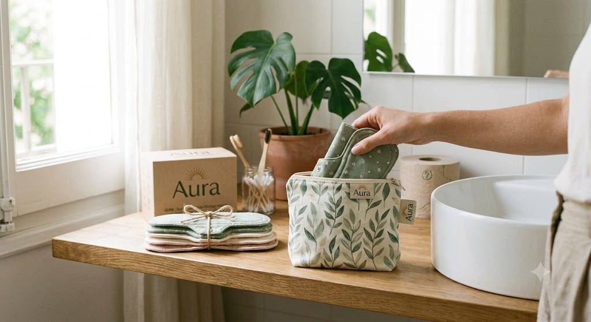

La revisión sistemática más amplia sobre toallas reutilizables, que reunió 44 estudios y cerca de catorce mil ochocientas participantes, identificó las dificultades con el lavado y el cambio como uno de los obstáculos más reportados: falta de agua, de privacidad, de jabón, de recipientes y de lugares donde secar.[1]
Es decir: el problema de este producto casi nunca es el producto. Es la rutina. Por eso este artículo es más largo que la ficha técnica.

La rutina, en cuatro pasos
1. Enjuagar en frío, apenas se pueda
Agua fría, siempre. El agua caliente coagula la proteína de la sangre y la fija a la fibra: la mancha deja de ser una mancha superficial y pasa a ser parte del tejido. Enjuagá bajo el chorro hasta que el agua salga clara.
Si no podés hacerlo en el momento, no pasa nada: dobla la toalla hacia adentro, cerrala con el broche y guardala en la bolsa impermeable hasta llegar a tu casa.
2. Remojar, si hace falta
Para manchas que ya se secaron, remojo en agua fría entre treinta minutos y un par de horas. Cambiá el agua si se oscurece mucho. No hace falta más tiempo, y dejarlas remojando toda la noche desgasta la fibra sin mejorar el resultado.
3. Lavar con jabón neutro
A mano o en máquina, con agua fría o tibia. Detergente común sin blanqueador, o jabón neutro. Nada de suavizante.
4. Secar completamente antes de guardar
Al aire libre si se puede. El secado completo es la parte que más se descuida y la que más problemas causa: una toalla guardada húmeda desarrolla olor y manchas que después ya no salen.
El sol ayuda a aclarar manchas leves y es la forma más barata de secar. Circula también la idea de que la radiación ultravioleta desinfecta la tela; es una afirmación que se repite mucho en blogs y que no vamos a presentar como si estuviera demostrada para este uso, porque no tenemos un estudio que lo respalde.
Lo que sí podemos decir con confianza: un lavado con jabón y un secado completo son las dos condiciones que importan. La revisión sistemática de PLOS ONE, con 44 estudios, no reportó casos objetivos de infección asociados al uso de toallas reutilizables.[1]
Lo que nunca
- Suavizante. Recubre la fibra con una película que repele el líquido. Es la causa número uno de que una toalla «deje de absorber».
- Cloro. Degrada el tejido y acorta la vida útil del producto. La mancha se va; la toalla también, más rápido.
- Agua caliente en el primer enjuague. Fija la mancha de forma prácticamente irreversible.
- Plancha sobre la capa impermeable. El calor directo puede dañar la lámina interior que impide el traspaso.
- Guardarlas sin secar del todo. Origen de olor y de manchas permanentes.
Las manchas y lo que hay que aceptar
Con el tiempo, la tela de contacto puede tomar un tono más oscuro. No significa que esté sucia ni que haya perdido capacidad de absorción: significa que se usó. Una toalla limpia con marca de uso es un producto funcionando, no un producto fallado.
Si te molesta visualmente, los estampados y los tonos medios —el salvia y el rosado de Aura— disimulan bastante más que un blanco liso. Es una de las razones por las que la línea no tiene una versión blanca.
Fuera de casa
Es la duda que más frena la compra, y tiene una respuesta sencilla. Doblás la toalla usada con la cara de contacto hacia adentro, la cerrás con su propio broche y la guardás en la bolsa impermeable. Queda cerrada, sin olor perceptible y sin contacto con el resto de tus cosas. En casa seguís la rutina normal.
Para una jornada larga fuera, dos o tres toallas y la bolsa alcanzan sin problema.
Cuándo reemplazar una toalla
Tres señales, ninguna relacionada con el color:
- Absorbe visiblemente menos que las demás del juego, incluso después de un lavado sin suavizante.
- La capa impermeable dejó pasar líquido a la ropa dos veces seguidas sin que hubiera desborde por saturación.
- El broche no cierra o la costura se abrió.
Fuera de eso, una toalla manchada pero funcional sigue siendo una toalla funcional. La literatura ubica la vida media real en torno a 4.3 años, con un rango que llega a diez años con buen cuidado.[2, 3] Casi toda esa diferencia se decide en el lavado.
Si no tenés agua confiable
Decirlo es parte de vender esto con honestidad. Este producto necesita agua limpia, jabón y un lugar donde secar. La revisión de PLOS ONE documenta que, donde esas condiciones faltan, el lavado y el secado se vuelven el principal obstáculo de uso.[1]
Si en tu casa el agua es intermitente o no tenés dónde secar con privacidad, este producto probablemente no te va a funcionar, y preferimos que lo sepas antes de comprarlo.
Referencias
- van Eijk, A.M. et al. Exploring menstrual products: A systematic review and meta-analysis of reusable menstrual pads for public health internationally. PLOS ONE, 2021. 44 estudios, ~14.800 participantes. journals.plos.org
- Harrison, M.E. y Tyson, N. Menstruation: Environmental impact and need for global health equity. International Journal of Gynecology & Obstetrics, 2023. obgyn.onlinelibrary.wiley.com
- Life Cycle Initiative (PNUMA). Single-use menstrual products and their alternatives. 2021. Sobre el efecto del método de lavado en el impacto ambiental. lifecycleinitiative.org